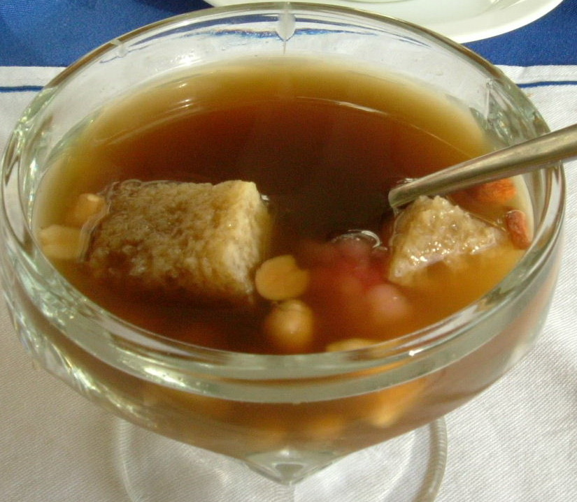

GUDANG PANGAN
Warisan Bangsa adalah Harta Negara

Sekoteng
23 April 2021 dibaca : 99999Sekoteng adalah minuman rasa jahe asli Jawa Tengah yang dihidangkan panas. Bahan lain yang dicampur ke dalam minuman sekoteng biasanya berupa kacang hijau, kacang tanah, pacar cina, dan Potongan roti.
Sekoteng biasa dihidangkan pada malam hari.
Dan seterusnya
Dan seterusnya
Dan seterusnya
Dan seterusnya